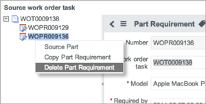
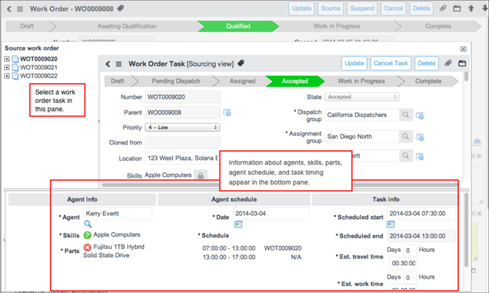
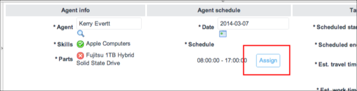

Part Requirements
Contents
1 Overview
After all work order tasks are qualified, the parent work order state automatically changes to Qualified. At this point, you can request more information from the qualifier, if necessary, and source any parts required for the tasks.
If a work order was created from a work order template, the system automatically adds the part requirements to the work order task. Work order model templates are available starting with the Eureka release.
The examples in this page illustrate the use of part requirements with work orders; however, part requirements can be used with any Service Management application.
To create part requirements and source parts, the part requirements option must be enabled in Field Service Configuration (starting with the Fuji Release).
| |
Note: In the Fuji release, Work Management was renamed Field Service Management. If you are using a version prior to Fuji, refer to the Work Management - Versions Prior to Fuji pages. |
2 Requesting Additional Information
If there is not enough information to create transfer orders to move the necessary parts to where the agent can receive them, the dispatcher can request more details from the qualifier.
This action returns a work order to the Awaiting Qualification state.
- Navigate to the appropriate location for your version:
- Eureka release or later: Work Management > Dispatching > Dispatch Queue
- Dublin release or earlier: Work Management > Work Order > Dispatch Queue
- Open a work order task in Pending Dispatch state.
- In the Work Notes field, enter a reason for returning the work order.
- Click Request more information.
- The task state changes to Draft and the work order state changes to Awaiting Qualification. If work management is configured for automatic qualification, the work order state remains at Qualified.
3 Sourcing Parts
Sourcing a part is the process of reserving and obtaining an asset described in a part requirement record, either by ordering it from a vendor or transferring it from one stockroom to another. Users who can create work orders can create part requirements by using work order tempales templates or by manually using the procedures on this page. Agents, qualifiers, and dispatchers, including users with the combination roles (starting with the Eureka release), can create and source a part requirement.
- A qualifier determines if parts are necessary to execute work order tasks.
- A dispatcher sources the part requirements and creates transfer order lines.
- A dispatcher or agent moves the parts through the transfer process.
- An agent accepts delivery of the parts and records part usage.
Part requirements must be associated with a work order task. After parts are identified, a transfer order is created to move the parts from the stockroom where they are located to a different stockroom or directly to an agent. Agents can be selected based on skills and the availability of parts in their personal stockrooms. One work order task can have multiple part requirements and multiple transfer orders.
- In one work order task, multiple part requirements may require different items that can all be found in one stockroom. One transfer order can satisfy the part requirements. The transfer order will have multiple transfer order lines, each specifying a different item based on the part requirements.
- When one stockroom has all required items, a single transfer order line can fulfill the order when moving consumable assets. One or more transfer order lines may need to be created when moving non-consumable assets. (For more information about consumable and non-consumable assets, see Managing Assets.)
- If a single stockroom does not contain all the items needed for the part requirement, create an additional transfer order line to a different stockroom. Because the new transfer order line specifies a different stockroom, a separate transfer order is automatically created. One part requirement is then fulfilled by two separate transfer orders to two different stockrooms.
4 Managing Part Requirements
Create, copy, and delete part requirements as required for work order tasks. If the agent assigned to the task does not have the skills or parts required, you can select an agent that is better equipped to complete the task.
4.1 Creating a Part Requirement
- Navigate to Work Management > Work Order > All Work Orders.
- Open a work order.
- Open a work order task that is not in Closed or Cancelled state.
- Do one of the following:
- Click Source. All tasks and part requirements are listed on the left. Point to any task or part requirement icon to obtain more information. Right-click a work order task and select Create Part Requirement. This method is useful if you are sourcing multiple parts for a work order task.
- In the Part Requirements related list, click New. This method is useful if you are sourcing a single part for a work order task.
- Fill in the fields, as appropriate (see table).
- Click Submit.
- If the part is out of stock, a message appears at the top of the form naming the part.
- If someone other than the qualifier will source the part requirement, create transfer order lines, move the part from a stockroom to an agent, and click Qualified.
| |
Note: Part requirement record numbers start with an SOPR prefix and the records are stored in the [sm_part_requirement] table in the Service Order Management application, starting with the Fuji release. Part requirements created in prior releases start with an WOPR prefix. |
| Field | Description |
|---|---|
| Number | [Read-only] Auto-generated number for the part requirement. |
| Work order task | Number assigned to the work order task. |
| Model | [Required] Description of the part model needed to complete the work order task. |
| Required by date | [Required] Date by which all parts should be delivered. The date is filled in automatically based on the task's expected travel start time. If necessary, change the date manually. |
| Required quantity | [Required] Total quantity necessary to complete the part requirement. This field becomes read-only when the full number of required parts has been sourced (starting with the Eureka release). |
| Reserved quantity | [Read-only] Total quantity that has been sourced already. |
| Sourced | [Read-only] Indicator for whether the required quantity for this part requirement has been reserved and transfer requested from one stockroom to another. |
| Delivered | [Read-only] Indicator for whether the transfer order lines under this part requirement have been delivered or not. |
| Short description | Contents of the Short description field from the parent work order. If the work order was created from an incident, problem, or change request, the short description of the part requirement is inherited from that record. If the work order was created automatically from a work order model, the short description is from model template. This field is not visible by default starting with the Fuji release. |
4.2 Copying a Part Requirement
Copy a part requirement to quickly create another, similar part requirement. Part requirements can be copied by agents, dispatchers, and qualifiers, including users with the combination roles.
- Navigate to Work Management > Work Order > All Work Orders.
- Open a work order.
- Open a work order task that is not in Closed or Cancelled state.
- Click Source.
- In the list on the left, right-click on a work order part number and select Copy Part Requirement.
- This option copies the part requirement information to the clipboard.
- In the list on the left, right-click on a work order task number and select Paste Part Requirement.
4.3 Deleting a Part Requirement
Qualifiers and users with a qualifier combined role can delete a part requirement.
- Navigate to Work Management > Work Order > All Work Orders.
- Open a work order.
- Open a work order task that is not in Closed or Cancelled state.
- Click Source.
- The Source work order task window appears, showing the part requirement records in the tree on the left.
- Right-click on part requirement number and select Delete Part Requirement from the context menu.
- 
- The system deletes the part requirement without displaying a confirmation message.
{kind=link}
4.4 Sourcing Parts and Assigning Agents
The work order sourcing option is useful when you want to assign a work order task to:
- Agents who already have the required parts in their stockroom.
- A specific agent who needs you to obtain the parts for them.
The sourcing option shows the full list of tasks and part requirements to source for a work order or task. For each task, the agents and stockrooms that have the required parts are listed. Also, the skills and parts required for each task are displayed. Select an agent to see if the agent has the skills and parts required for the task. The time slots the agent is available within the work order window are shown to help you schedule task work efficiently.
To source parts or assign an agent:
- Navigate to Work Management > Work Order > All Work Orders.
- Open a work order.
- Open a work order task that is not in Closed or Cancelled state.
- Click Source.
- In the navigation tree of the sourcing screen, click a work order task.
- The bottom pane shows information about agents, skills, parts, agent schedule, and task timing.
- 
- The Agent field under Agent info, is populated automatically, based on information provided in the work order task.
- To specify a different agent, click the reference lookup icon
 .
.
- Only agents that meet the criteria in the work order task are available for selection. The system populates the Skills and Parts fields automatically, based on the agent specified. If a red X icon appears next to a part, the specified agent either does not have the part or does not have enough units of the part to complete the task.
- Point to the icon to obtain information about how many units of the part are needed and how many units the agent has in their stockroom.
- To filter agents and reserve parts, click the arrow next to Agent info to expand the section.
- In the Date field, select the date on which the work should take place.
- If the agent is available on the date specified, the Assign button appears in the Schedule field.
- 
- If necessary, you can update the Scheduled start and Scheduled end fields in the Task info section.
- If you change the Scheduled start and Scheduled end fields in the Part Requirements section at the top of the screen, the corresponding fields in Task info are also changed. If you make changes to the fields in the Task info section, the corresponding fields in the Part Requirements section are not changed.
- Any edits to the Estimated travel duration, Estimated work duration, or Scheduled start time fields on the Task form appear automatically in Task info.
- Click Assign.
- To revert your changes to Agent Info, click Refresh.
- You cannot use Refresh after you have saved the record.
- Click Save.
- The agent is not assigned until you save the record
- Source any parts the specified agent does not yet have reserved. In the left pane, select a part from the list of part requirements under the task.
- Click Source Part and complete the transfer order.
{kind=link}
{kind=link}
{kind=link}
{kind=link}
{kind=link}
{kind=link}
{kind=link}
5 Transfer Orders
Transfer orders contain one or more transfer order lines. The transfer order defines delivery dates, the stockrooms involved in the transfer, and the general status of the order. A transfer order line describes the part, the quantity required, and the status of the part in the transfer process. ServiceNow creates a transfer order automatically when you create a transfer order line. You can add additional transfer order lines to a transfer order, as long as the transfer order is in the Draft stage. When any of the transfer order lines advance to the next stage, the transfer order stage also advances, and can no longer accept additional transfer order lines.
5.1 Consumable and Non-Consumable Models
The transfer process is slightly different for consumables than it is for non-consumables. Consumable assets, such as computer keyboards, are not tracked individually in transfer orders. Non-consumable assets, such as network routers, are configuration items that are tracked individually in transfer orders.
- Consumable model: If the model being transferred is a consumable, the system can order all the items at once if you specify a Requested quantity on a single transfer order line. After the quantity is specified, ServiceNow determines whether the selected stockroom has enough quantity to fulfill the part requirement. If the stockroom cannot fill the entire part requirement, the system enters the quantity available in the stockroom automatically. For example, if the requirement is for 25 keyboards and the selected stockroom only contains 10, the available quantity of 10 is added. The user must create another transfer order line manually to order the remaining 15 keyboards from another stockroom.
- Non-consumable model: If the model being transferred is a non-consumable asset, create one transfer order line per asset. The system creates as many transfer order lines as the required quantity. This approach is used so that each configuration item can change its status and stockroom location independently. For example, if the part requirement specifies two Canon i960 Photo printers, and if ServiceNow manages these printers as configuration items, then the system generates two transfer orders lines - one per configuration item. After the agent receives the part (item state changes to In Stock and substate changes to Reserved) and uses it, the asset is listed as In Use by the caller who originated the work order.
5.2 Creating Transfer Orders
- Navigate to Work Management > Work Order > All Work Orders.
- Open a work order.
- Open a work order task.
- In the Parts Requirements related list, click a Number.
- Click Source Part.
- A new Transfer Order Line form appears. The system completes the Model field automatically with information from the part requirement. You can select a different model, but it must be a substitute for the requested model. If you click the reference lookup icon (
 ) beside the Model field, only the selected model and any substitute models that are in stock are listed.
) beside the Model field, only the selected model and any substitute models that are in stock are listed.
- A new Transfer Order Line form appears. The system completes the Model field automatically with information from the part requirement. You can select a different model, but it must be a substitute for the requested model. If you click the reference lookup icon (
- Select a From stockroom.
- Only stockrooms that have the model specified are included in the list. If no stockrooms are listed, the part is considered out of stock.
- Select a To stockroom.
- To deliver the items to an agent directly and skip the Received stage, select a personal stockroom as the destination. If no agent is assigned to the work order task, the transfer order line waits in the Received stage until an agent has been assigned.
- To use a part without transferring it, select the same non-personal stockroom for both the source and destination stockroom. This action moves the transfer order directly to the Received stage and sets the asset state and substate to In stock - Pending transfer (starting with the Eureka release).
- Note: An error occurs if the same personal stockroom is selected for both the source and destination stockroom. In this case, the transfer order line automatically moves to the Delivered stage even if no agent is assigned to the work order task.
- Specify the Quantity requested.
- If the first stockroom you select does not contain sufficient quantity, then repeat steps 2-5 until the entire quantity required is ordered. As you order from stockrooms, ServiceNow updates the number in the Reserved quantity field automatically. When the numbers in the Reserved quantity and Requested quantity fields on the Part Requirement form match, the system selects the Sourced check box. After one transfer order line is requested from the part requirement, you cannot change the part requirement.
- Select a Delivery method.
- Qualifiers, dispatchers, agents and users with combined roles can specify a delivery method for parts while a transfer order is in the Draft stage. The possible delivery options are:
- Standard
- Overnight
- Courier
- Agent Pickup
- Click Submit.
{kind=link}
5.2.1 Merging Transfer Orders
After you submit a new transfer order, ServiceNow examines all existing transfer orders attached to the current work order task to determine if the new transfer order can be merged with any of the existing ones. The system uses these criteria to merge transfer orders:
- Created from the Work Management application. (Configure the transfer order record to add the Type field.)
- In the Draft stage.
- Same From Stockroom.
- Same Destination Stockroom.
If an existing transfer order matches these criteria, the new transfer order line is placed under the existing transfer order. If no existing transfer order matches these criteria, a new transfer order is created and the transfer order line is added. It is good practice to view the transfer order and ensure that all information is correct. For example, check that the Delivery by date on the transfer order is appropriate for the Required by date on the part requirement. Transfer orders created in the Work Management application are not merged or combined with transfer orders created from any other application, such as Procurement.
When all the transfer order lines under a part requirement are delivered to the assigned agent's personal stockroom, the part requirement is marked Delivered. When both the consumable and non-consumable assets are delivered, the system changes their State to In stock and their Substate to Reserved (in Asset Management).
6 Transferring Parts
Agents, dispatchers, and users with combined roles can transfer parts. Open a work order task in the Pending Dispatch state, and then open a transfer order from the Transfer Orders related list. Transfer the parts using the procedure in Moving an Asset Through the Transfer Process.